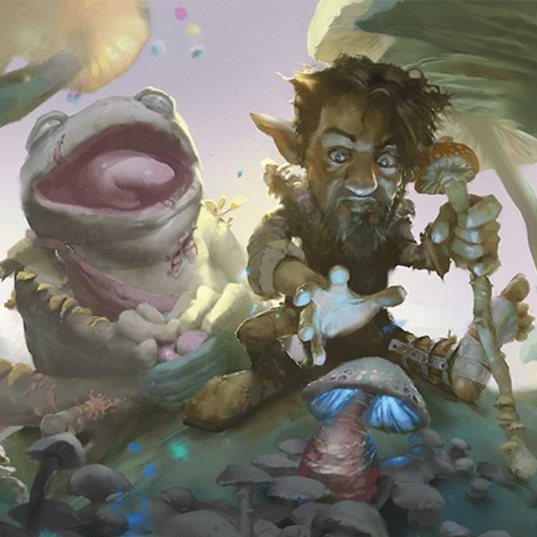

Fae Creatures
Creatures associated with a fae heritage are generally unwelcomed in Celestia, and most tend to avoid venturing into the realm. If any do find themselves within the borders of Celestia, they often resort to using illusion magic to conceal their true nature. The inhabitants of Celestia view fae creatures with suspicion and distrust due to their magical and unpredictable nature, which is often considered dangerous and unsettling.
As a result, fae creatures such as fairies, sprites, and other magical beings with fae heritage are likely to keep their true identity hidden if they find themselves in Celestia. They may use illusion magic to disguise their appearance or otherwise conceal their fae nature, in order to avoid discrimination or hostility from the inhabitants of Celestia who do not view them favorably.
This unwelcoming stance towards creatures associated with fae heritage is reflective of Celestia's general aversion to arcane magic and its emphasis on nature-based beliefs and deities. The realm's inhabitants may view fae creatures as unpredictable and potentially threatening, leading to their use of illusion magic to hide their true nature if they venture into Celestia.
